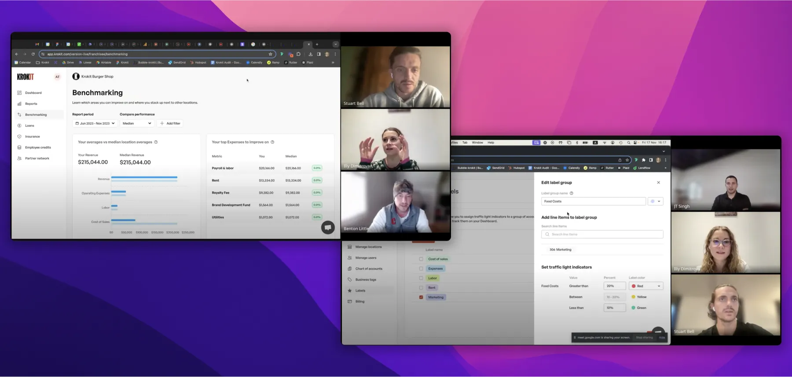

Krokit is the financial data management platform for the franchise industry.
What real business results came out?
- Research platform - five-figure monthly subscription revenue within the first two months
- Franchisor platform - Krokit signed up three franchises in the first few months of launch, two of which have 90+ locations across the US
- Multiple feedback from users that the platform is very user-friendly and has a clean design (“I love the tool and the product. I plan on acquiring more and more franchises, so I think I'll be using this tool regularly.“ Krokit Research Platform user)
User Feedback Survey for Krokit Research Platform
What did I work on?
As the first and only designer in the company, I established a design process and created the design language. My process involves five main stages:
- Discovery - competitor analysis, user research and stakeholder interviews.
- Ideation - brainstorm, strategise and asses each idea, using Figjam and Figma for planning and designing initial screens and user flows.
- Design - collaborative iteration, incorporating feedback before moving to the proposal, and cross-functional collaboration for development.
- Build - supporting developers with development and testing.
- Review - user feedback and ensuring features had the impact we'd hoped.
1. Research Platform
Problem
Before buying a franchise, aspiring franchise owners need to research a bunch of franchises and sieve out the most promising ones. Aspiring owners struggle to find one place to do their due diligence and end up paying huge fees to franchise brokers and consultants for the initial research and franchise information.
Solution
We developed the Krokit Research Platform, aiming to consolidate the most comprehensive franchise data available, setting a new industry standard.
During my time at Krokit, I collaborated closely with the CEO, who is well-known in the franchise industry as The Wolf of Franchises. This helped me gain deep insights into the franchise sector and our user base.
After research, I learnt that aspiring small business owners are not proficient in reading and understanding complicated data. I chose a clean and minimalist feel for the platform to make it easy for users to see each brand and scan through data points quickly.
Research Platform - search and save franchises
To enhance user navigation, I integrated filters, allowing users to refine their searches. A seemingly minor yet impactful UX detail was deciding to open each brand summary page in a new tab, significantly improving the browsing experience.

The ability to compare franchises proved very useful to users. This feature helps them select two franchises side by side and easily scan through their most important metrics.

Research Platform - search and save franchises
2. Franchisor Platform
Problem
Franchisors need to see all franchisee financial data in one place and understand each location's performance so they can make adjustments to grow the business.
Solution
We developed Krokit for franchisors which helps them manage all their franchisee data in one place; and for the franchisees on the other hand (small business owners), to easily see their accounting data and compare their performance to other locations in the franchise.
Building this product included chatting with CFOs, designing graphs, income statements, and balance sheets so I had to get my accounting chops up to speed.
There were a lot of challenges along the way, for example, the onboarding flow and franchisor data sharing. I am not sharing these learnings publicly due to company privacy.

Banking dashboard for franchisees
Income Statement Report for franchisors
User research calls with franchisees
What did I learn?
Each Krokit product had diverse user groups and I learnt a lot about the motivations of each group and how product flows should be tailored to the specific user segment. A big lesson was also the importance of designing based on realistic data. The experience at Krokit also honed my collaboration skills and I thoroughly enjoyed working in a multi-cultural product team distributed between the US and the UK. A few key takeaways:
- Bubble as a no-code platform is ok for building quickly and testing MVP. However, it could be slow, and buggy and it has limitations in implementing designs compared to code. Bubble also has unexpected updates asking users to refresh the app and we didn't have any power over when these updates would be. So if I was making the call, I would have chosen to build the app in code after testing the MVP in no-code or start building in code immediately.
- The handoff process was a bit tricky, developers interpret designs differently. The design language helped so they could select from preset styles.
- Eventually, to enhance efficiency between design and development efforts, I started building the pages and components in Bubble which were then hooked up to the backend logic.
- I would have loved to spend more time on the branding, but delivering the MVP for both products was more important.